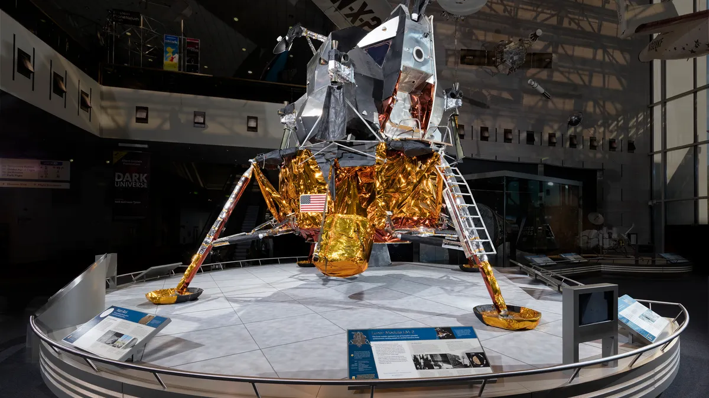

Historic Space Missions
Humanity's greatest achievements in space exploration.

Sputnik 1
The world's first artificial satellite, launched in 1957, marking the dawn of the Space Age.
Completed
Apollo 11
Neil Armstrong and Buzz Aldrin become the first humans to walk on the Moon on July 20, 1969.
Completed
Hubble Telescope
Over 1.5 million observations since 1990 — revolutionizing our understanding of the universe.
Still Active
Mangalyaan (ISRO)
India's Mars Orbiter Mission — first Asian nation to reach Mars orbit, in its very first attempt.
Completed